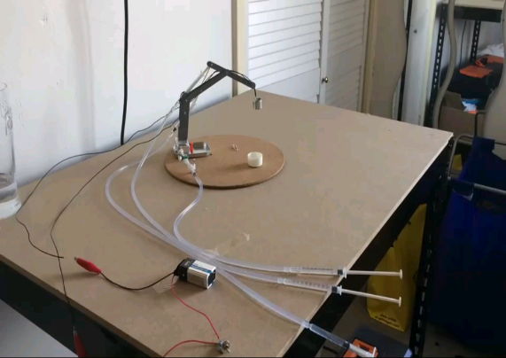
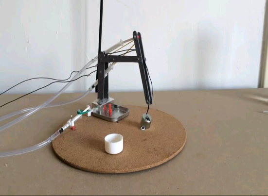
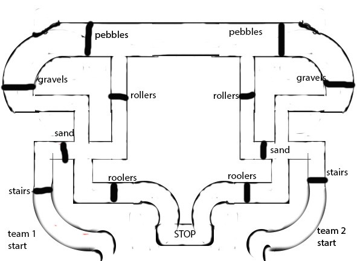

-
This game is solely intended to engage players in virtual warfare where they associate themselves to either of the clan viz. the terrorist, the counter terrorist or the spectator. The mere aim of this game is to launch attacks and assaults on their adversaries, deploying spectrum of available weapons, wreaking havoc on maps and knock the opponent out.
- Game Version: Counter-Strike 1.6 (Steam Version).
- Operation System: Windows XP Professional (Service Pack 2).
- Organizers recommend players to bring their own mouse, keyboards, headphones, and any other peripherals to simulate their own best playing environment.
- No mouse pads will be available, so please bring your own.
- Organizers will not be responsible for performance issues related to peripherals.
- No pen drives, CDs or DVDs are allowed. This will lead to disqualification of the team or as decided by the referee.
- Decision of the coordinators will be final in case of any disputes.
- Competition Method : 5 vs. 5 (Team Play, 5 players per team).
- The Server Master will record a demo of the match.
- Organizers may install third party program and/or join as an observer for tournament operations purposes, such as verifying match results or gathering match data.
- League matches are knock out matches. Team winning 11 rounds out of 20, wins (Race to 11).
- Final match will consist of 3 maps (Best of 2, each map race to 11).Maps will be decided by mutual consent.
- Harshit Srivastava - 9532997620
- Nitish Bhatia - 9540577985
-
FIFA game features real-time 3D graphics on the Sega Saturn, PlayStation, and PC versions, using technology called "Virtual Stadium". It is also the first in the series to present players with real player names and positions, with ranking, transfer and team customization tools. It is a multiplayer computer game which can be played online or offline. This event is full of blaze, excitement and adrenalin rushThe tournament will be a single-elimination tournament also called an Olympic system tournament, a knockout or sudden death tournament is a type of elimination tournament where the loser of each bracket is immediately eliminated from winning the first prize in the event. Games will be 5 min half.
The Finals:- The last round or The Finals will be a knockout round to heighten up the tension, excitement and anxiety among players. This round will consist of Quarterfinals (8 players), Semi-finals (4 players) and Final (2 players).
- The games will be played in a 10 min half.
- Duration of matches will depend on the round being played.
- Players will be provided with the systems on which FIFA will be installed.
- Player can manage their default squad, formation and button setting.
- No handicap setting will be allowed in any circumstances.
- All matches will be played on the professional level.
- Any conflict will be heard by and decided by the preceding coordinate.
- Same college/cross college player is eligible to participate in the event.
#NOTE: REGISTRATION FEE - Rs 50- AYUSH PRATAP - 7835864601
- MAYANK AGGARWAL - 954810843
- SHUBHAM AGGARWAL - 7503806071
-
More than ever before in human history, we share a common destiny. We can master it only if we face it together. And that, my friends is why we have the United Nations.
These lines by Kofi Annan clearly describe the essence of our event. Apart from bringing out the intellect, general awareness, tactfulness and the ability to mould themselves in the situation, the event also aims at bringing out the leadership skills of the participant by providing them a platform for interacting with people of diverse ideologies and an opportunity to get into heated debates and discussions in order to pass resolutions for the greater good of the world.
The event will take place in two rounds: THE PRELIMINARY ROUND: The participants will be sorted in the following departments and will engage in group discussion on a topic related to the portfolio. The departments which will be simulated in- General Assembly-Disarmament and International Security Committee
- International Atomic Energy Agency(IAEA)
- Human Rights Council(HRC)
- National Security Council(NSC)
- United Nations Commission on Science and Technology for Development (UNCSTD)
THE FINAL ROUND: The 10 finalists will be assigned one country each, five of the permanent members of the UN SECURITY COUNCIL and five others, to participate in a group discussion on a global issue. Model United Nations is our very small step towards inheriting our future and making our destiny. It may not change the world but it will change a person, it will change you.- It is an individual event i.e. for one participant only.
- The participant will choose their genre in the preliminary round by lucky draw.
- here will be 7 participants in one slot and 10 minutes to each slot will be allotted.
- For the final round, 5 minutes will be provided to each team for the presentation then the forum will be open for 30 minutes for the discussion.
- Rebuttling is allowed on the participant.
- MAITREE RASTOGI
- SIMMY CHAUDHARY
- MUDIT AGRAWAL - 08377094252
-
"Trade liberalization is vital to the process of development. Voluntary international exchange widens consumers range of effective choices and lowers the risk of conflict."
Maintaining coherence with the previous event, this event emphasizes the importance of global trade and international fidelity. This one day mega event encompasses the entire timeline of global trade and the various commodities under exchange.For the event, college premises would serve as the map of the globe, where participants would get the real world's feel. To provide the real essence, various transaction of commodities will be made whose worth would change with the time era. Starting with nothing but some seed money as capital, the team will roam around the college as the Columbus of 2015 and explore to accommodate as much as they can in capital and as resources. By the end of the day,the team with the highest capital in terms of money and resources will be declared as the winner.- It is a team event i.e. 2 - 3 participants per team.
- The storyline and rates will change on an hourly basis.
- All entries in the score sheet will be altered by coordinators only. Any discrepancies may lead to disqualification.
- The participants will act as traders which shall explore and study the 5 nations and carefully place their bets on the commodity as well as the country they transact with.
- SHEKHAR TYAGI - 9759620610
- SHEETAL KHANNA - 8743933866
-
Java guru is a technical event where one's coding capability in java language will be tested. Along with the proper knowledge of coding terms, a brain with good logical approach will be needed to get through the event.ROUND 1:
The first round being quiz where individuals will be tested on questions based on core java concept and syntax of java. A 30 min MCQ quiz will be the next part of the round.
ROUND 2:
This round would test participants programming skills. Qualifiers from the first round will have to answer 7 questions in duration of an hour using their java skills.
Rules will be declared Soon.- ANKIT VERMA - 8010428305
- MARUSHI SHARMA - 7827175819
-
Do you have quick reflexes and sound presence of mind with fundamental knowledge of programming? Well, if you boast to have all the three then you are cordially invited to make yourself a part of this incredible programming event.
The technical programming event where players are required to put high pressure on their control unit container, yeah! You got it, your brain and crack a series of formidable problem statement in team. "Scared?" Each creepy problem statement will include a description, a specification of the input and output data and list of sample test cases.
TEAM SIZE: 2
A team must consist of 2 participants, from same or different institutes.
Contest will be held in 2 Rounds: Preliminary and Final.
Preliminary Round:
Pre-round consists of some problem statements with strict constraint of time. All teams are required to code on problem statements complying with the time constraint. Specific number of teams successful in hard coding of the problem statement shall be allowed to move for the final round.
Final Round:
The qualified teams will again be provided with some more problem statements but this time with added constraints on the use of number of variables, size or Lines of Code (LOC), number of statements, time, etc.
Teams successful in cracking all the problem statements in compliance with the constraints will be declared as the winner of the event.
Tools:- 1 C/C++/JAVA COMPILER
- 2 NOTEPAD ++
- Team shall comprise of not more than two participants.
- The judgment parameters will be:
- Functionality
- Errors and loop holes
- Design
- Time
- Program would be considered complete if and only if all the specifications listed in the problem statements are met.
- Solution to each problem must be in C which will be compiled using GCC.
- No internet facility will be provided.
- Use of pen drives, E-books or any other soft material is restricted.
- Use of any other material will be considered as unfair means and the team will be disqualified.
- In case of tie, decision of coordinators will be final and bound to all.
- Dhawal Bajaj - 9873268632
- Rishabh Sharma - 7838254347
- Shobhit Sharma - 9540070332
-
The "PRESSURE PICASSO" is an event in which a hydraulic arm has to be made. The arm will be made using syringes, ice-cream sticks, pipes, solenoid, battery, etc. Each team is required to bring its own model i.e. the hydraulic arm and thus have to perform the task in a specified time.The event will majorly comprise two rounds- Pre-round and Final round. The teams qualifying the Pre-round will be in the final round. The major essence of both the rounds would be the "pick and place" tasks which are to be performed in a specific time interval.
 -
2 to 3 members allowed per team.
-
Modifications are allowed.
-
Electromagnet should not be purchased from the market, each team is supposed to make its own electromagnet.
-
The syringe should be of 10 ml only.
- NAMIT SRIVASTAVA - 8782850609
- SAURABH SRIVASTAVA - 9716645528
-
-
The participants with a keen interest on operating systems have just the right kind of event for them. SYSTEM 32 will have the participants refresh the system files library of their brain.
The event comprises of two rounds:
ROUND 1:
The first round is a 30 minute online quiz where participants will be asked questions based on operating skills and system 32.
ROUND 2:
Round 2 is one hour practical round in which the qualified participants from the first round will be given 25 problems related to operating system and system 32 files.
Rules will be declared soon.
- SHEKHAR TYAGI - 9759620610
- SHEETAL KHANNA - 8743933866
-
The modern era has laid its foundation on the pillars of electronics. Today, the electronic devices form an important part of man's life and profession. Different arrangements of electronic components would result in a different electronic device. Here you will be tested whether you are capable and skilled enough to design something new and show your worth.
PRE-ROUND:
In the first round teams consisting of 2 members each will get to design and implement circuits of mentioned values of resistance and capacitance. The teams would be judged for their precision and time span in which they accomplish the equivalent resistance or capacitance. The top two teams to perform the task in the shortest time and with greatest precision would be selected for final round.Venue: Back Block
Time Duration: 1 Hour
FINAL ROUND:
The qualifying teams will be asked certain numerical questions. The teams will have to guess the correct answer and then visit the campus to search for the same numeric value which will be stuck on the trees. A series of numeric values and alphabets would lead them to form "PHOENIX". The first team to find this word will be the winner.Venue: From Admin Block to LT complex
Time Duration: 1.5 Hours
PRE ROUND
-
First two teams to complete the task will be declared as winners.
-
Judges decision will be final in case of any conflicts.
FINAL ROUND
-
All the teams will be provided with a college map.
-
Teams found tampering with the other coloured pluck cards will be disqualified.
-
After three wrong answers the team will be disqualified
- SHUBHAM PATEL - 9971527597
- KANIKA YADAV - 7838881134
- SUGANDHA SINGH - 9810619364
-
-
You are a space-explorer, descendant of Noah's Arc with the mission to explore the last remains of Noah's Arc. While exploring, you lose your stock of fuel and have to land on planet "Rigolo". You move in search of the Arc and some fuel. It is a hostile terrain with danger at every step, but it also offers an adventure-packed journey filled with numerous exhilarating experiences of overcoming various hurdles and escaping from the dangerous "Rigolians" to accomplish your mission. Are you a descendant worthy of proving yourself?
Event Outline:It is a manual robot based event. The event will comprise of 3 major rounds which will test a few qualities in the competing robots.
Round-1It will be a qualifying round checking the robustness of the bot. Arena will consist of various obstacles like bumps, slopes, mud, glass and grease etc which you will have to cross and reach Noah‘s Arc to complete the round.
Round-2Task for this round is to find some fuel cylinder and balance it on your bot, to test the stability of the bot. (Object details: Diameter = 10 cm, Height = 10 cm).
Round-3In this round, the bot has to reach the survival point crossing various check points in a maze while simultaneously being chased by the deadly "Rigolians"(Host Robots). This will check your control on the bot. (50 points for each check point and 100 for survival point).
Robot SpecificationParticipants have to design a wired or an unwired robot which can complete the above said tasks. The specifications of the robot are:
- Max voltage supply: 24V
- Dimensions: 30cm X 25cm X 30cm (5% tolerance allowed)
- Robot should weigh less than 5 kg.
- Only DC motors should be used.
- Some balancing mechanism should be used.
- Ready-made assemblies are not allowed.
- The top of the robot should be a plane surface so that object for Round 2 can be kept.
(Cardboard can be used to cover the robot from the above)
Duration of Tournament Round-1The teams will have to complete the track in maximum allotted duration of 180 seconds.
Round-2The teams will have to complete the track in maximum allotted duration of 180 seconds. Top 16 teams will be selected for this round.
Round-3Top 8 teams will be selected for this round.
Judgement CriteriaThe time taken by the robots and points earned during the respective rounds.
- A team can consist of at most 4 members.
- Each team must declare a name for itself at the time of competition.
- Judges have the right to disqualify any team whose working mechanism or game strategy is considered erroneous in any way.
- In case of any kind of disputes, the judges' decision will be considered final and no further argument will be entertained.
- HITESH GOEL - 9899364189
- ASHISH BANSAL - 9410283343
- UJJWAL GUPTA - 8791436160
-
The world has seen great transformation easing every possible strenuous task with the help of robots. Here you will get a glimpse of adroitness of human mind which is getting adept to using robots for it. This event invites people to tickle their grey cells and show their tactical robotic skills with a need of speed. In "Pick-i-Majesto", the participants will be tested on the basic intelligence of not only technical skills but also their sync & coordination with the other team member. So, you win with your empathy for everything of any field.
The Problem Statement
Qualifying teams (refer to rules section) will be provided with the problem statements on-the-spot. The event consists of three rounds.
Round-1
The team will require participants to make their robots adept to the picking capability so that they can fill the pit to move forward, in order to bridge the gap to their ultimate goal. Teams covering largest distance in minimum time will qualify for 2nd round.
Round-2
A hurdle of rotating disc with an object kept in the middle. Two teams will be confronted against one another and the one which will grab and run with the object first will carve its way to the 3rd round.
Round-3
You will be given an impression of a renowned mind game "Sudoku". One team member will be doing the decoding part whilst the other member will pick the required pieces to be filled in the required spaces with the help of their robots. The selected teams will get to the last & final round - Robot Maze Contest. In this, contestants will navigate a maze, in which the sync & coordination of the team members will be challenged. The team member operating the robot will be blindfolded whilst the direction will be given by the other team members. The team that gets to the goal first, via mysterious levels, will be declared as the winner amongst all.
Judgement Criteria
- Any discrepancies during the event will be left to the discretion of the judges and their decision will be final, binding and irrevocable.
- The basic criterion is control and design.
- In case no clear winner emerges, then the decision of the winner will be left to the discretion of the judges.
- The winner will be decided on the basis of dominance over other robots in the arena.
- The robot will be given points for each hurdle and dodge.
- This is a team event, with two members in each team.
- Students from different educational institutions can make a team.
- Lego kits will not be allowed.
- The decision of the jury shall be final and binding on all participants.
- YASH SHARMA - 08791218480
- MOHIT VARSHNEY - 09718005570
- NALINI SINGH
-
With every swing of the pendulum, the universe is inching close to the final frontier of destruction. The apocalypse is inevitable, but the essence of life has been endurance and survival. Each of the surviving cults will evolve to save themselves from the fiery feast of nature. They will fight, kill and destroy anything and everything that comes in their way for survival, unaware of the fact that they will also perish. With "Robocalypse", destruction will dawn upon everyone except the "Gladiator". This event bestows a deluge of opportunities for its participants to showcase their creativity, hand in hand with practicality to present the paramount blend of strength and power. This is it, the "Robo-War" event.
Prelimnary Round
The robot will be tested for its strength, design, power and control. The participating robots will be given points based upon their design and their performance in the preliminary round. Bots with the highest points will qualify for the next round.
Final Round
The participating teams will not be allowed to change or modify the design of their robot. Only non-working components will be allowed to be changed and that too in the knowledge of the coordinators. The final round will comprise of three stages. In the first stage 27 robots will confront each other in groups of three. The surviving robots from the 9 matches will again fight against each other in groups of three in the second stage.The three surviving robots from this stage will fight for the title and the last surviving robot will be declared as the winner.
Robot Specification
- Max. 24 volt DC motor will be allowed.
- 220 volts A.C. supply will be provided.
- Maximum size of the robot can be 50cm x 50cm x 50cm (± 2cm tolerance).
- The maximum permissible weight of the robot is 15 kg (± 1kg tolerance).
- The robot must fit in the mentioned size cube with arms folded above it.
- There is no restriction on the number of weapons used in the robot.
- No fire weapon will be allowed.
- Pneumatic and hydraulic weapon techniques are allowed but the robot should not leave behind any discharge on the arena.
- The basic criterion is strength, power, control and design of the robot.
- If the robots in a particular round are unable to eliminate each other and no clear winner emerges, then the decision of the winner will be left to the discretion of the judges.
- From the second stage of the final round onwards, an extra time of 3 minutes will be given to the participating teams in case no clear winner emerges. Still if no result is obtained, the decision of the winner will rest with the judges.
- The winner will be decided on the basis of dominance over other robots in the arena.
- The robot will be awarded with points for each attack and the utilization of the weapons.
- A team of maximum four members can participate.
- Inter-college teams are allowed to participate.
- At any point of time, only one robot is allowed to enter into the arena with only two team members, if necessary.
- The robot will have to force the other two robots out of the arena or dump them in the death pits or destroy their forts to qualify for the next stage.
- The last robot surviving in the arena will be declared as the winner.
- Each fight in the final round will be for a maximum of 3 minutes. In case if no clear winner emerges in the round, the decision on the qualifying robot will be left up to the discretion of the judges whose decision shall be final and binding for all.
- The robots are not allowed to interrupt the power supply of the opposing team.
- The participating robots should not leave behind any discharge on the track.
- The participating robots should not damage the track under any circumstances.
- In case, any technical problem arises on the arena, the teams will be allowed two time-outs of 15 seconds each to deal with their problems.
- No external power supplies or power regulators are allowed.
- Any violation of the above rules and regulations will lead to direct disqualification from the event and it will be at the discretion of the coordinators and the judges to decide whether the robot is abiding to the rules and regulations or not.
- AHMAD RAMEEZ - 09871024700
- SHIVAM AWASTHI - 08750901037
- ANANT CHATURVEDI - 08285515140
-
It's an era of automation. The seemingly unfathomable, intricate future depicted in movies suddenly seems so near. The Race is on. The crowd looks upon the robots as they prepare to go where no robot has ever gone before. Bots are about to get down and get dirty in the robot race .You got to be the fastest and mightiest to win the challenge. Are you ready to test the endurance of your ultimate machines?Preliminary Round
Pre round arena will be a simple curve with less hurdles and teams completing the arena in the least time will qualify for the main round.
Final Round
The teams have to guide their robots to the end points passing across the obstacles on the path. The team whose bot reaches the end point first wins.
Arena:
Venue: Amphi-theatre
Time Duration: 3-4 hours
Robot Specification
- Voltage between any two points should not exceed 24V. Variable power supply is not allowed.
- Maximum weight-3kg.
- Dimension: Width-22cm (max.) Length-30cm (max.)
Team with maximum no. of points will be declared as winner. Points will be awarded on the basis of time taken by a team to complete the race, less is the time taken more will be the points awarded. Beside this, some points will also be awarded for crossing the hurdles, the more hurdles you cross more will be the points awarded. Finally total points earned by each team will be summed up and the winner will be declared accordingly. Decision of jury members will be final in any case.
- No. of members in a team: 2-4.
- There will be maximum 2 time-outs in a single race(Penalty of 10 s for each time out).
- There will be two rounds: prelim and final.
- 220 volts AC power supply will be provided.
- Maximum no. of DC motors to be used is 6.
- Winners will be decided on the basis of time and points.
- SUNIL SAINI - 8375819629
- SHIKHAR GARG - 8285488038
- ARJUN KANSAL - 9015179744
-
Yet another fun frolic and thrilling event in which we have robots occupying the field, imbibing a variant of the soccer game. Heading towards the horizon of survival, this army of robots outscores humans in all spheres. Highlighting the creative and imaginative skills of the teams, this one on one soccer game also marks the speed and sensitivity of the robots on the field.
This event consists of 1 round.Maximum no. of participants in team: 4.
The event will be conducted in an arena and each participating team has to bring its robot which will try to put the ball into the opponent goal by kicking it.
- A robot of maximum dimension 25x25x20 cm3 is allowed.
- A 220V AC supply will be given.
- More than 4 members are not allowed in a team.
- Robot must use an extra hand to kick the ball.
- Single match duration is 5 minutes without any timeouts.
- Arena will be disclosed later.
- Winner to be decided on total no of points incurred in terms of goals and penalties.
- ABHISHEK BHADRA - 8505906221
- SIDDHARTH AWASTHI - 8375917227
- PHALGUNI KRITIKA
-
Stepping in an era of electrifying roars and rudders, the survival of humanities is important to avoid global destruction. The robots are designed to sail on water and overcome the versatility of various hurdles. It is both fun and knowledge boosting to see the creative techno-sailors explore their remote environment amidst the gushing waves, each having a specific mechanism to defeat the others.This event consists of 1 round.
Maximum no. of participants in a team: 4
Each participating team is required to make and bring a manually controlled boat that would cross the arena and reach a specified point in minimum possible time.
- Each team can consist of a maximum of 4 members.
- The boat should fit in the box with dimensions 25cmx25cmx20cm.
- Boat may be wired or wireless.
- The wire of the boat (if used) must be at least 5m long.
- Use of motors is permitted.
- Motors should be D.C.:12/24 V.
- A 220 V A.C. supply will be given.
- Use of any mechanism for propulsion is allowed.
- Winners will be decided on the basis of the time they take to reach the FINISH LINE after clearing several obstacles.
- Decisions of judges shall be final in any case.
- Maximum two motors are allowed.
- NRIPENDRA SINGH - 9899463744
- ANGADPREET SINGH - 8375960921
- AYUSHI SRIVASTAVA
-
It is the 33rd century. The Civil war has struck the galaxy which was once ruled by an empire. The princess has fled the empire with her protector General Luke Skywalker. On the way she has lost a precious stone "Aura Spice". You are the "Star-fighters" of the planet "Aquilae" and have to find the "Stone" and your own "Planet" by overcoming all the obstacles that will block your path. The fort consists of "three" rooms full of asteroids, planets, fireball and much more. So charge up your robots and get ready.
Event Outline
- The task will need a Manual Robot fitted with Pick n Place or Hold and Drag mechanism.
- Your bot has to pass through the demarcated path, leading to the first room.
- Here, three colored asteroids (balls) are to be placed in their respective colored pits (holes). Simultaneously the team will be asked a simple question, the correct answer to which will lead you to the next room directly otherwise through a difficult path.
- As soon as you exit the first room, a fireball will be passed. Entering the next room before it, will award you bonus points.
- The next room will have planets (wooden boxes) numbered from 1 to 9. You need to place the planets corresponding to your pre-provided code in their respective orbits from left to right.
- Once the code is cracked, it will lead you to the next room where the "Stone" is kept.
- Here, you will have to place an object against a switch which will open a path to the "stone". Finally, you will have to keep the "stone" at the indicated place, where its presence will glow a bulb and the event will be completed.
- Arena will be on plywood (Basic structure as shown).
- Asteroids are tennis balls (Diameter=6 cm )
- Planets are Cubes made of wood (5 X 5 X 5cm)
- Box in third room will weigh 2kg (10 X 10 X 10 in cm.)
- Size of Stone (Cylinder: Diameter=6 cm, Height=10 cm)
Participants have to design a wired or unwired robot which can complete the above said tasks. The specifications of the robot are:
- Max voltage supply: 24V
- Dimensions: 30cm X 25cm X 30cm (5% tolerance allowed)
- Robot should weigh less than 5 kg.
- Pick and place or Hold and drag mechanisms can be used.
- Only DC motors should be used.
- Ready-made arm assemblies are not allowed.
First Round
The Teams will have to score maximum possible points in the allotted duration of 300 seconds. Total points scored by each team will be recorded. To qualify for knockout round, teams will be selected based on their earned score. And if it is a tie then position will be decided by knockout game between the contenders.
Second round
All further rounds will be Knockout Rounds. Top 16 teams will be selected for this Round.
Quarterfinals (8 Teams)
Semifinals (4 Teams)
Final Round (2 Teams)
(In Knockout stage the team which places the "stone" on the Exit Point first will be declared winner and in case either team fails to complete the task in the stipulated time, the points earned in that match during the allotted time will be taken in consideration.)
Judgement Criteria
S. No. Task Performed Points Earned 1 Placing each ball in correct hole/ Placing all three balls in correct holes 10/50 2 Escaping from fire ball 10 3 Placing each Box at correct place/ Placing all four boxes at correct places 10/50 4 Turning on the switch by pushing the heavy box 40 5 Placing the Stone on Exit point 50 - A team can consist of a maximum of 4 members.
- Each team must declare a name for itself at the time of competition.
- Judges have the right to disqualify any team whose working mechanism or game strategy is considered hazardous in any way.
- In case any kind of dispute arises the judges’ decision will be considered final and binding to all and no further argument will be entertained.
- MRIDUL GOEL - 9873649933
- SHIVAM AGARWAL - 8588053274
- SRIJAN AGARWAL - 9717613287
-
Opening gateways for the techno-savvies for an unprecedented plethora of fun, this event would be highly interactive along with the exquisite touch of technology. It will involve one to use his gathered wisdom not only in the field of computers but also in various aspects related to general awareness and to pump up their adrenaline rush, they will be given time limit. So, not just in the traditional C/C++, one can also dig in to prove his/her proficiency in various other aspects.
The event consists of 2 rounds.
Maximum no. of participants in each team: 3
Pre Round
This round consists of various tasks relative to different domains. The team has to complete their tasks successfully to qualify for the next round.
Final Round
This round involves clash of teams qualified for the final round on the basis of their mental judgment, technical skills and quick reasoning.
Pre Round
- No task can be repeated.
- The teams cannot proceed to any random venue depending on their choice.
- Any misconduct would be strictly considered that would even lead to disqualification.
Final Round
- The rounds will consist of a question being put up to each team.
- Any sort of misconduct will lead to disqualification.
- The decision of quizmaster shall be final and binding for all.
- Chahat Srivastava - 9911939703
- Sanchit Tandon - 8285908686
- Ravi Ferwani - 9457020146
-
Tech Hour Shoot has surpassed 3 years of creating an unmatched aura of dynamic and fun-flooded groovy event year after year. This fun-frolic event lets the experts within people unleash their intelligence and tap their fingers very quick.
Preliminary Level
This phase consists of an hourly flashing as well as announcements of questions. Interested participants are supposed to send their answers in the form of a text message.
Main Level
The qualifiers from the preliminary level will perform tasks ranging from doing physical activities, to vocabulary tests like tongue twisters or to answer simple questions related to various fields.
- One question will be displayed on projector screen every hour.
- Each task has a defined time in which the task is to be completed.
- There will be a lapse time of 15 min between every round.
- Final decision will be taken by the Event Coordinator in case of any discrepancies.
- AKASH SRIVASTAVA - 9717382303
- SHUBHAM GUPTA - 9999662657
- YAJUR GULATI - 9891813509
-
Route De Moksha has evolved over years and is ardently recognized as one of the top-notch event in Tech Trishna. Throughout the unmatched glorious past of this event, it provides a platform to students to test their knowledge and observational skills. This event was a benchmark in terms of quality and is highly anticipated among IITs, NITs and other educational institutions. Following its mass appreciation and demand this time various events have been added to add on to the fun.
Route D Moksha is an online single player game, for which the players have to register with their Tech-fest ID allotted to them. Players will get to use their logical senses to unravel the questions and move to further level. As the game will get going the difficulty level of questions will increase, though hints will be provide to ease their nerve. The event is to be declared closed on the last day of the Tech Trishna. The player to reach the last designed level first will be declared winner. In case the game is not being cracked till the final level in its tenure, the winner will be the first player who reaches the maximum cracked level.
- Route D Moksha is a round the clock treasure hunt.
- All discussions shall take place on the discussion forum only.
- Google is your best friend.
- Answers contain only alphanumeric characters, spaces are allowed.
- Reverse searching of images may come quite handy while solving.
- No spoilers will be entertained. Posting an answer (or anything close to it) on the forum is not allowed. Anyone attempting to do so will be banned from the game. The decision of Admin will be final and binding.
- If you have any queries, you can contact us at routedemoksha@gmail.com
- Anything and everything that is on the screen would serve as a hint. It is there for a reason.
- Palash Deep Baranwal- 8285920211
- Anubhav - 9999955101
- Kumar Gaurav - 9013482612
-
Paper planes and rockets have always coloured our memories, ever since our childhood we have all fancied flying. Also, the exhilarating experience of launching rockets, placed in water bottles has always thrilled us. To relive those memories a “water rocket” event is being organised, with an alluring edge to it.
This event is about making a WATER ROCKET. Water rocket is a type of rocket model which uses the mixture of air and water as the propellant to get its reaction. They are usually made with an empty plastic bottle by adding water and pressurizing it with air for launching. The event will consist of two rounds.
Round 1
The first round will be a questionnaire type of round which would be there for the purpose of judging the very basic knowledge of the participants about physics such as thrust, aerodynamics etc.
Round 2
The teams will have to test their rockets which they will launch as the projectile using the pressure pump and launcher provided on site.
Note:A Demo for preparing Water Rocket will be given to the students qualified for 2nd round.
- The team will consist of only 2 members.
- The rocket must be of PET bottles of soft drinks only of 1.2L or 2L.
- The maximum height of rocket must not be more than 70 cm.
- Use of fins or any external object on the periphery of rocket is not allowed.
- Two attempts will be allowed for each criterion.
- The winner will be decided on the basis of range of flight.
- Launcher will be available on site.
- Any propellant other than water is not allowed.
- AKHIL YADAV - 9717136342
- MUDIT SINGH - 9958196302
- ROSHNI BARANWAL
-
You can think of it as a team-building, spirit-raising, collaborative, creative problem-solving exercise, for the participants depending how much time you have. This event is an exercise in and demonstration of individual and collective creativity. One can say it is an opportunity to challenge and exercise, not only collective creativity, but also collective humor, resourcefulness, adaptability, flexibility. This brings you a step closer to engineering craftsmanship.This event will be conducted in two rounds Maximum no. of participants in team: 4.
Pre Round
The participants are supposed to design a mechanism using the junk provided to them.
Final Round
In the final round the participants will be given a problem statement the solution to which will be a mechanism which participants need to design using junk provided to them. The scrap needed to design the mechanism shall be taken from the mechanical labs and AKGIM. All the mechanical engineering department labs will be open to aid the participants in their designing. Student coordinators, lab assistants and if needed faculty coordinators will be present to ensure the security of the labs.
Rules will be declared soon.- AKHIL GAUTAM - 9911632976
- ANUJ KUMAR GOEL - 8826637403
- OJASWEE ASHOK - 8004591225
- VIKAS SINGH 8800627332
-
The first bridge to be ever built was that of wooden planks and boulders used merely to cross rivers and lakes. But today, engineers have evolved the whole notion of fundamental architectures. Bringing this opportunity to the doorstep, the participants will get to create and plan the most crucial and fundamental architecture i.e. bridges. Tech trishna brings you a chance of showing your engineering skills with popsicles! So get innovative and build your bridge model with the unconventional construction materials.
Round 1:Photo Mania
In the first round the participants will be shown some pictures. Some of them will be pertaining to civil engineering while the other ones will be to make the quiz more entertaining. Participants who would answer the questions quickly and accurately will move to the next round.
Round 2: Bridge It Fix It
The short listed teams i.e. 20 teams shall construct their bridges under the surveillance of organizing team. The model built by each team will be tested till failure by applying an incremental static load (weights).
- Each team should have at most 3 members.
- Time duration : 3 hours will be provided for round 2.
- Google is your best friend.
- Dimension specifications : Length : 50-60 cm Width : 10-11 cm Height : 12-16 cm Weight specifications :The bridge model should weighs 150-250 gm
- Any additional material will not be allowed.
- In case of any discrepancies, the decision taken by the judges and the coordinators will be final and bounding.
- SUMIT RAWAT - 8505810103
- SHARADNAND TIWARI - 9718580031
- SHUBHAM SRIVASTAVA - 7065210612